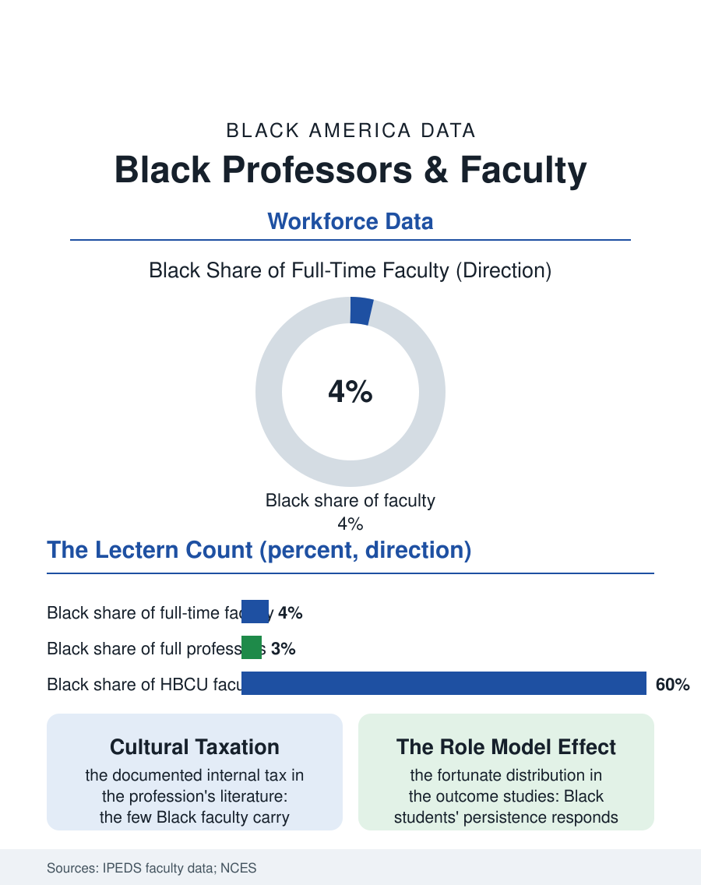

Black Employment
Four Percent of the Lectern: Black Professors
Four percent of faculty, two at the top rank, carrying the cultural tax, while their presence measurably moves their students' persistence. The professors file.

Black professors constitute roughly four percent of the nation's full-time faculty, a share that halves again at the full professor rank and thins further at the research universities, in the profession whose business is the production of the credentialed class itself. The federal faculty census counts the pattern institution by institution, with the HBCUs standing as the great exception, their faculties majority Black by design. This article reads the professors file.
The Faculty Funnel
The Integrated Postsecondary Education Data System's faculty counts give the file its structure: Black faculty cluster in the community colleges, the regional comprehensives, and the HBCUs, and thin toward the research tier whose prestige and resources define the profession's commanding heights, so that the Black scholar's typical post is at the institution type with the heaviest teaching load and the lightest research support in the system's own accounting. The rank distribution compounds it: assistant professors are the most diverse rank in the current data, the tenure gate then filters, the tenure rate studies finding Black candidates tenured at lower rates with longer clocks in the research tier, and the full professor and endowed chair tiers recording the accumulated result in the low single digits. The discipline distribution follows the doctorate file's: the education, social work, and humanities faculties fuller, the STEM faculties thinnest, with the professional schools, law, medicine, business, running their own counts in those files' chapters. The service file inside the profession is the file's most documented internal tax: the cultural taxation literature's name for the mentoring, committee, and representation load that falls on the few, the Black professor as the department's diversity infrastructure, advising every Black student, sitting on every search, a load the tenure file then declines to count, the profession's own version of the representation burden the hours file records in the corporate tier.
HBCUs and the Other Side of the Ledger
The HBCU faculty is the file's counterweight and its historical engine: the Black professoriate was built there, when the white academy would not hire it, into an institution whose senior ranks include the scholars the research universities later recruited in the integration era's one-way market, a talent drain the HBCU presidents of the era named and the current endowment campaigns answer. The HBCU faculty's economics invert the research tier's: heavier loads, lighter pay, and the mission's density, the professor as the community's public intellectual by default, a role the Black intellectual tradition's history was substantially written from, the Howard and Atlanta and Fisk faculties having produced the scholarship on which much of this atlas's understanding rests. The current era's market has introduced the file's newest dynamic, the research universities' cluster hiring and retention bidding for senior Black scholars at packages the HBCUs cannot match, against which the HBCUs' counter is the endowment era's new money and the mission's own recruiting argument, a competition the faculty census will record cohort by cohort.
The Classroom's Composition
The professors file closes on the students' side of the lectern, because the faculty's composition is an educational input in the data: the studies of student outcomes find the Black student's persistence and major choice responding to the Black professor's presence with effect sizes the education literature treats as policy-grade, the role model effect measured in the community college data most rigorously, which is to say at exactly the tier where the Black faculty is thickest, a fortunate distribution the system did not design. The adjunct file darkens the close: the profession's casualization, the majority of instruction now delivered by contingent faculty, has built a tier whose Black share and whose economics the census counts imperfectly, the adjunct's per-course wage being the academic version of the service economy's floor, and the tenure track's diversity gains arriving in a profession whose center of gravity is shifting beneath them. The federal census counts the full-time faculty at four percent and the trend at a crawl. The file's last entry is the lecture hall's: the professor is the credential's face, the student reads the institution's promise in the person at the board, and four percent of the faces, for thirteen percent of the students' people, is the arithmetic the next cohort of the doctorate file does its deciding against, in both directions, every fall.
More in Black Employment
The Black Unemployment Rate: The Two-to-One Pattern
Black unemployment runs at roughly twice the White rate — 5.5 percent against 3.3 percent in annual averages — a ratio stable across five decades of federal data. How it is measured and why it persists.
Black Median Weekly Earnings: The 80-Cent Ratio
Black full-time workers earn a median of about $900 a week — roughly 80 cents for every dollar White workers earn. The BLS earnings data by group, gender, and occupation.
Black Labor Force Participation: Working at National Rates
Black labor force participation runs at roughly the national rate — and Black women participate at higher rates than White women. The BLS participation data.
Source: U.S. Department of Education, IPEDS faculty data; National Center for Education Statistics, National Study of Postsecondary Faculty.